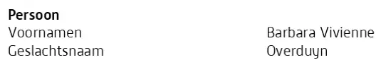
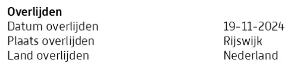

Preuve · Registre
Fiche d’état civil de Barbara Overduyn, orthographe officielle de son nom
Le nom officiel
« Personne · Prénoms : Barbara Vivienne · Nom de famille : Overduyn » Le bloc « Persoon » (personne) de la page 1, l’intitulé et les deux premiers champs. Les deux-points et les points médians sont ajoutés ici pour la lisibilité. Traduit du néerlandais ; le texte original figure ci-dessous.
“Persoon · Voornamen: Barbara Vivienne · Geslachtsnaam: Overduyn” Texte original

Le décès
« Décès · Date de décès : 19-11-2024 · Lieu de décès : Rijswijk · Pays de décès : Pays-Bas » Le bloc « Overlijden » (décès) de la page 1, l’intitulé et les trois lignes relatives au décès. Le document est un formulaire : il s’agit donc d’un intitulé suivi de trois noms de champ et de leurs valeurs, imprimés sur deux colonnes. Les deux-points et les points médians à la place des retours à la ligne sont ajoutés ici. Traduit du néerlandais ; le texte original figure ci-dessous.
“Overlijden · Datum overlijden: 19-11-2024 · Plaats overlijden: Rijswijk · Land overlijden: Nederland” Texte original

Pourquoi ce document compte
Cette fiche d’état civil consigne son nom officiel : Barbara Vivienne Overduyn. Ce point compte, car l’orthographe de son nom était l’une des deux inexactitudes du livre qui, selon la Cour d’appel de La Haye en 2016, n’étaient pas contestées. Le livre écrivait Overduin, l’orthographe de l’enquête interne du MID du 12 février 1999. La même année, dans un fax adressé au Médiateur national, elle a elle-même signé Overduijn, et la Cour a constaté qu’elle n’y avait pas orthographié correctement son nom. La fiche est un extrait de la Basisregistratie Personen, le registre néerlandais de la population, issu des fichiers de la dernière commune où elle résidait. Y figure aussi son décès, le 19 novembre 2024 à Rijswijk ; c’est sur cette année-là que s’appuie la remarque de l’essai selon laquelle le ministère de la Défense maintient la position de son témoin principal même après le décès d’Overduyn. Les données relatives à ses parents, à son inscription et à chacune de ses adresses sont caviardées.
Provenance
- Document
- Fiche d’état civil (persoonslijst), extrait de la Basisregistratie Personen, le registre néerlandais de la population, deux pages
- Délivré par
- Stichting Centraal Bureau voor Genealogie, qui figure sur la fiche sous le nom de CBG Centrum voor familiegeschiedenis
- Source des données
- La dernière commune de résidence de la défunte, qui a fourni les données au CBG. Le CBG les communique sur la base d’une autorisation et d’accords conclus avec le ministère de l’Intérieur, consignés dans la Wet BRP et la Regeling BRP
- Personne
- Barbara Vivienne Overduyn, née le 28 novembre 1964 à ’s-Gravenhage (La Haye)
- Date
- Décédée le 19 novembre 2024 à Rijswijk. La fiche elle-même ne porte pas de date de délivrance
- Référence
- Fiche d’état civil 0000/4458669. Le numéro de débiteur est imprimé sous la forme 0000
- Caviardé
- Les deux champs relatifs aux parents, le champ d’inscription et chaque champ d’adresse, actuel et historique, sont caviardés dans cette copie
- Langue
- Néerlandais
- Conservé par
- Archives de l’auteur
- Voir aussi
- Enquête interne pour le chef d’état-major du MID, 12 février 1999Barbara Overduyn au Médiateur national, fax signé, 16 septembre 1999Cour d’appel de La Haye, arrêt du 12 avril 2016 (ECLI:NL:GHDHA:2016:870)
Cité dans : l’essai « L’interdiction tombée, le livre debout » dans les chapitres (1) « Un précédent unique » et (11) « Mettre fin au silence pour Srebrenica ».
Fiche de preuve : https://
Document : https://
Dernière modification le 13 septembre 2026, consulté le 3 octobre 2026.

Cette page est une fiche de preuve du livre Le Général de dissimulation d’Edwin Giltay et du site web qui l’accompagne.